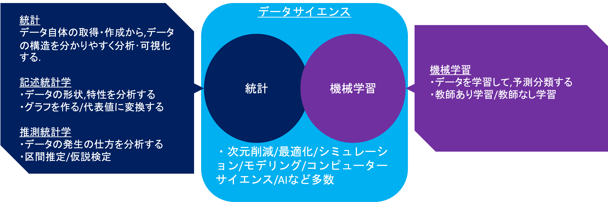
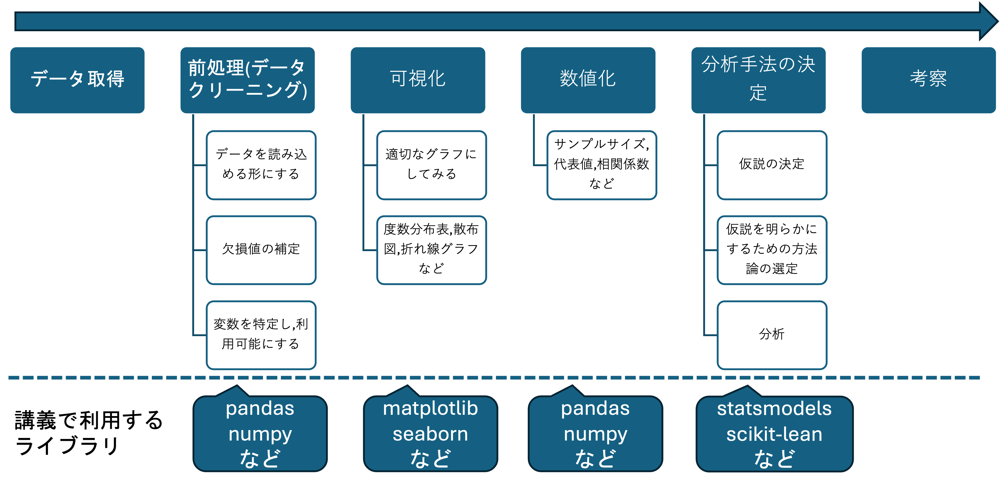
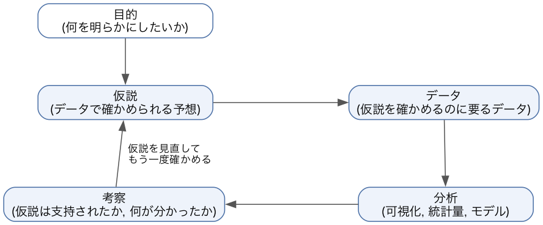
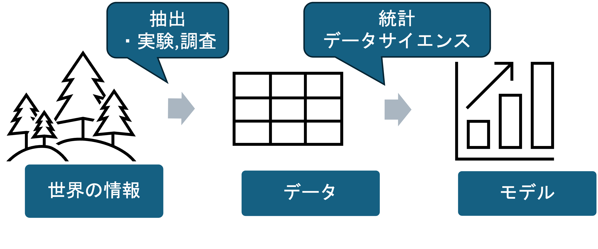
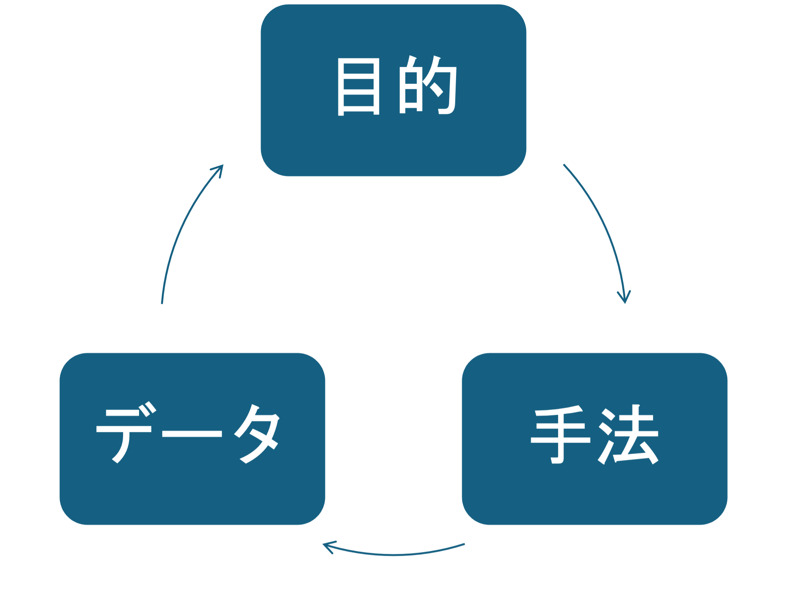

データサイエンス実践 Ch2 分析設計: データ分析の進め方
資料
はじめに (注意点)
本講義の課題で扱うアンケートなどの調査データは架空のものです. 特別講義では研究用に実データを使いますが, 本講義には該当しません. 架空のデータやサンプルデータなので, 得られた結果は, 卒業研究などで利用できるものではありません.
データサイエンスとは
データサイエンスは, データを利用して現象を発見したり, 予測をしたりする科学の総称です. データの作成, データを分析する前の処理, 利用するコンピュータ関連の技術なども対象となります.
データサイエンスと関連の深い分野として統計, 機械学習, AI がありますが, それらもデータサイエンスの一部とみなせます.
統計は, データ自体の取得・作成・集計から, データの構造を分かりやすく分析・可視化する学問です. 機械学習は, データから予測モデルを作り, 意思決定などに応用する学問です. 統計と機械学習・AI は明確に分割できるものではなく, かなりの部分が共通しています. 特に統計学入門で学ぶ初歩的な統計は, 機械学習や AI, データサイエンス全般を学ぶ上での前提知識となります. この他, どちらかに分類できるわけではないモデリング, シミュレーション, 最適化, 次元削減など, 様々なトピックが含まれています.

本講義では, 統計学入門で学ぶ可視化, 数値化, 回帰などの統計学の手法を PC で実行するほか, 統計学入門の範囲を超えた発展的な手法も学習します. ただし, データサイエンスは非常に広範な学問なので, 統計学入門のように個別の手法を細かく理解することはせず, それぞれの概要と使い方を扱います.
データ分析の進め方
データ分析は, 一般に次の順序で進めます.

図の工程のうち, 考察までの部分は基本的にプログラムによって実行し, それぞれの作業に適したライブラリを利用します. どのライブラリを利用するかは図の下側に記載しています. 各ライブラリの使い方は, 該当する作業を扱う章で説明します.
仮説検証サイクル
データ分析は, 上の図の流れを 1 回通れば終わるものではありません. 分析の前に「こうなっているのではないか」という予想を立て, データで確かめ, 結果を見て予想を立て直す, という作業を繰り返します. 分析の前に立てる, データで確かめられる形の予想を仮説といい, 仮説を立ててデータで確かめる作業の繰り返しを仮説検証サイクルといいます.

大学生の成績を例にします.
- 目的: 大学生の成績を決めている構造を明らかにしたい.
- 仮説: 勉強時間が長い学生ほど, 成績が高い.
- データ: 学生の 1 週間の勉強時間と成績 (GPA) を, アンケートと成績の記録から集める.
- 分析: 勉強時間と成績の散布図を描き, 相関係数を求める (第4章).
- 考察: 正の相関はあるが弱い. 散布図を授業形態 (対面, オンデマンド) で色分けすると, 対面の授業では勉強時間と成績の関係がはっきりしているのに, オンデマンドの授業でははっきりしない.
- 仮説の見直し: 授業形態によって, 勉強時間が成績に与える影響が違うのではないか. この仮説を確かめるために, 授業形態ごとに分けて分析し直す (2 に戻る).
仮説を先に立てるのは, 何のデータを集め, どの手法で分析するかが仮説から決まるからです. 仮説が無いまま手元のデータをいろいろ分析すると, 偶然現れた関係を見つけて, それを結論にする危険があります. 仮説を見直すこと自体は分析の正しい進め方ですが, 見直した後の仮説を最初から立てていたかのように報告すると, 目的・データ・手法から分析を組み立てるで述べる HARKing にあたります. どの仮説を, どの順に確かめたかは記録しておきます.
モデルとデータ
統計学やデータサイエンスはいずれもデータを利用しますが, データを利用して得たいものは何でしょうか. 統計学や, データサイエンスは, 世界に何かしらの構造 (モデル)が存在するという仮定をおいて, 情報を利用してその構造を明らかにすることを目的としています.
星の動きは特定のルールに従っている
コインを投げて表が出るか, 裏が出るかは, コインの構造や投げ方で決まる
社会科学では, そのような構造がない, あるいは変化する, 作るなどの立場もありますが, ここでは深くは扱いません.
しかし, 世の中の何かしらの対象の動きや現象を決める構造はどのようにすれば明らかになるのでしょうか. 私たちは, 情報を解釈することで世の中の何かしらの現象の背景にモデルを見出します. 単純な法則であれば, 目で見て, 耳で聞いて, 触ってという五感によってモデルを発見しますが, そのようなものも, 視覚, 聴覚, 触覚などの情報といえます. ただし, 自然の情報は複雑すぎるので, そのすべてを利用することはできません. そこで私たちは, データという形で情報を抽出し, 利用できる形にまとめます. データをそのまま眺めても, 人間にはまだ複雑すぎます. そこで, 統計やデータサイエンスの技法を用いてデータを何らかの基準でまとめ, 理解できる形, すなわちモデルに変形します.

この講義はデータサイエンスを扱うので, データを生み出した世界の背景にある構造を, データから明らかにすることを目指します. したがって, 分析の目的を決めるには, まず自分が明らかにしたい構造を決める必要があります.
分析目的の設定
分析の目的は, 何の, 何を決める構造を明らかにしたいのか, という形で立てます. 過去の研究事例はこちらから閲覧できます (各エントリを展開するとブラウザ内で PDF を閲覧でき, ダウンロードも可能です).
旧科目「特別講義 (データサイエンス)」では, 受講生が次のような構造を明らかにしました.
漫画の画像データを利用し, ニューラルネットワークを利用した画像解析手法によって, 年代ごとの漫画の顔の絵柄に違いがあることを明らかにしました.
大学生のアンケートデータを元に, どのような特性が投票行動の有無に影響を及ぼすのかを明らかにしました.
大学の学習データを用いたカテゴリーデータ解析によって, 授業形態別に良い成績を取る学生とそうでない学生の特徴を明らかにしました.
過去のヒット曲データや歌詞を利用したクラスタリングによって, 時代ごとのヒット曲の変遷と, ヒット曲になりやすい曲の特徴を明らかにしました.
大学の棟別の電力データを利用した時系列解析によって, 大学の電力消費に影響の大きい要素を明らかにしました.
言語ごとの LGBTQ に関する Wikipedia の記事の自然言語解析の結果と, 世界 LGBTQ 受容度ランキングの関係性を明らかにしました.
アンケート調査を利用した共分散構造分析によって, 大学生の大学生活の様子とメンタルヘルスの関係を明らかにしました.
Web ページ閲覧時の視線移動を実験により計測して, Web ページの特徴と視線移動の関係性を明らかにしました.
- その他多数
目的は, 次の 3 つが決まる形で書きます.
- 対象: 何についての分析か (大学生, ある店の会員, 日本の都道府県など).
- 結果: 対象の何を知りたいか. 分析で説明したい値で, 回帰や分類では目的変数にあたる.
- 要因の候補: 結果を決めていそうなものは何か. 分析では説明変数にあたる.
| 書き方 | 問題点 |
|---|---|
| 成績について分析する | 結果 (成績の何か) と要因の候補が無く, 集めるデータも手法も決まらない |
| 大学生の成績を明らかにする | 成績の値を調べるだけで, 何が成績を決めるかという構造が問われていない |
| 大学生の成績 (GPA) を, 勉強時間と授業形態がどう決めているかを明らかにする | 対象, 結果, 要因の候補がそろい, 集めるデータ (GPA, 勉強時間, 授業形態) と手法 (相関, 回帰) が決まる |
目的を書いたら, 結果と要因の候補を実際にデータとして集められるか (測り方が決まっているか, 手に入るか) を確かめます. 集められない場合は, 集められる値に置き換えるか, 目的そのものを見直します.
様々なデータ分析手法
構造を明らかにすると言っても, どの手法を使うかによって明らかにできる構造は異なります.
例えば,
関係がある → 相関 (第4章)
- SDGs に取り組む企業は, 生産性が高い傾向がある.
- 成績が良い学生は, 勉強時間が長い傾向がある.
- ただし, 傾向があるだけで, 勉強をたくさんすれば成績が伸びるという説明 (因果関係) はできない.
違いがある → 検定
- オンデマンド授業の方が, 対面授業よりも学生の成績が高い.
モデルで説明できる (予測できる) → 多変量解析, 統計モデリング (回帰など. 第5章, 第12章)
- 生産性が X 高まると, SDGs への取り組みの量が Y 増える.
分類できる → 決定木などの分類手法 (第6章)
- 購入履歴から, その顧客が次のキャンペーンに反応するかどうかを判別できる.
区別/要約できる → クラスタリング, 次元削減 (第7章, 第13章)
- 流行りの音楽は, 5 つのグループに区別できる.
- 流行りの音楽の特徴をまとめると, X や Y である.
といった手法があります. 対象の何を明らかにしたいかによって, 使う手法が決まります.
また, 分析するデータの種類によって, 手法はさらに枝分かれします (統計学入門, データ活用の統計学 (旧 統計学入門) などで扱っています).
授業では各章の必修部分を扱います. 総合実習 (第11章) では, クラスタリング, 画像認識, 自然言語処理のいずれかの題材でデータと分析内容を発表します.
目的・データ・手法から分析を組み立てる
統計やデータサイエンスは広い学問なので, その学習では様々な手法を断片的に学習し, その後必要となる特定の手法を深く学ぶというのが一般的です. では, 必要となる手法はどのように決めるのでしょうか.
手法は, 目的とデータによって決まります. まず, 目的 (何が知りたいか) が決まり, 利用できるデータが決まったあとに, 使える手法 (何が言えるか) が決まります. これは目的が先にあるパターンですが, データが先, 使いたい手法が先などの順で分析の組み立てが決まる場合もあります.

HARKingについて
この講義は分析を通じてデータサイエンスの手法を学習することを目指しているため, 以下のように, 手法やデータを先に決めて分析を組み立てることも認めています. 手法やデータから分析を組み立てること自体は, 研究不正ではありません. 問題になるのは, データを分析して結果を見た後に立てた仮説を, 最初から立てていた仮説であるかのように報告することです. これは HARKing (Hypothesizing After the Results are Known) と呼ばれ, 研究不正の一種とみなされる場合があります.
データ優位の分析は, データサイエンス分野や, 観察研究と呼ばれる分野でしばしば行われていますし, 特定の手法が利用可能な分野やデータを選択することは特定の手法の学習のためには有用です.
しかし, 統計的仮説検定などの統計的な仮説を前提とする分野では, 望ましい態度ではないとされています.
卒業研究などで研究をする場合には, 指導教員の指導方針に従って研究計画を立ててください.
目的から
この構造を明らかにしたい.
→ この構造から生じたデータを集める → このデータを使って構造を表す手法を選ぶ
→ この手法で明らかになる →この手法が使えるデータを集める
データから
このデータを分析したい
→ このデータを分析できる手法を選ぶ → この手法とデータから明らかになることを考える
→ このデータから明らかにしたい構造を考える → データから構造を明らかにする手法を考える
手法から
この手法を使いたい, 作りたい
→ この手法で何が明らかになるのかを決める → この手法が使えるデータを集める
→この手法が使えるデータを集める → この手法とデータから明らかになることを考える
本科目で扱う範囲
本科目では, 研究計画を自分で立てることはせず, データ分析の手法を学ぶことが中心です. この章の分析設計 (目的をどう設定し, どの手法を選ぶか) も, 手法を使うときの考え方として扱います.
実際に研究計画を立てて研究をやってみたい場合は, 担当教員のゼミか, 別科目のデータサイエンスプロジェクトを履修してください. 研究計画の立案と研究の実行は, そこで扱います.
共通資料
第3章以降は, Python でデータを読み込み, 編集し, 図表や分析結果を作る作業が中心になります. 分析の目的に応じた図表の選び方も, 作り方とあわせて第3章で扱います. 環境設定やコードの読み方に不安があるときは, 他の講義とも共通の資料を参照してください.
- プログラミング用の設定: VSCode とコマンドラインの設定, 基本コマンド.
- プログラミング基礎 (全 5 章): Python の環境構築, ライブラリの利用, データの取得と編集, 基本構文.
- バージョン管理とGitHub: コードと分析結果の履歴の管理, 公開範囲の判断.
- コーディングエージェントの利用: コーディングエージェントの導入と操作.
- Google Colaboratory による GPU 計算: GPU のない PC で, 時間のかかる学習を行うときの手順.